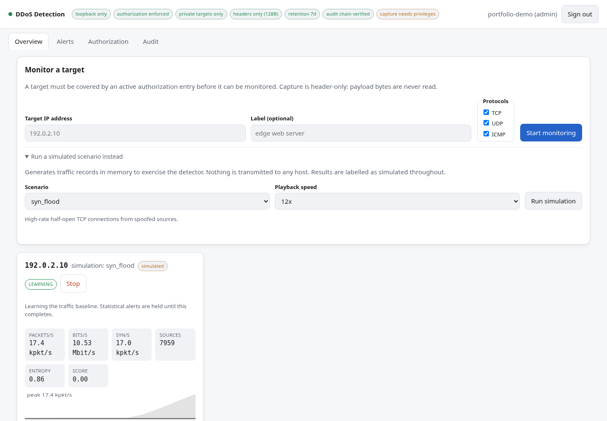

Network Security · Project documentation
DDoS Detector Dashboard
A defensive monitoring system with rule and statistical detection, a local web dashboard, alert review, an authorisation ledger, and a hash-chained audit log.

Purpose and outcome
Makes traffic observations and detection evidence visible through a local operator dashboard. This newer system performs detection only.
System architecture
A Python capture or simulation backend feeds a rule-and-statistics detection engine. SQLite stores metrics and alerts, and a local HTTP dashboard streams updates through Server-Sent Events. Authentication, role checks, authorisation records, and an audit chain support operation.
Implemented capabilities
- Packet-rate, SYN-rate, source-count, and entropy signals
- Baseline learning and per-rule threat scores
- Role-based alert review and authorisation tracking
- Built-in scenarios marked as simulated throughout the interface
Typical workflow
- Create an operator account and record authorisation for real monitoring targets.
- Start an authorised monitor or a built-in in-memory simulation.
- Review rates, baseline state, rule scores, and alerts.
- Acknowledge findings and inspect the audit log.
Evidence and validation
The local application was started with capture disabled. A demonstration account ran the built-in syn_flood scenario, and the browser screenshot shows its simulated records. Live capture, attack traffic, and production response were not exercised.
Limitations and operating context
Detection does not mitigate upstream bandwidth saturation. Capture throughput and baseline quality affect observations; thresholds need tuning to the monitored environment. This project is separate from the earlier DDoS Detection & Mitigation lab.
Prepared from the project repository and the captured application screen on 4 October 2026. Descriptions document the system’s capabilities; the evidence above states what was exercised for this portfolio update.
← Back to project case studies